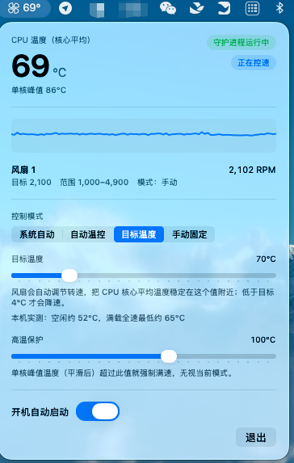
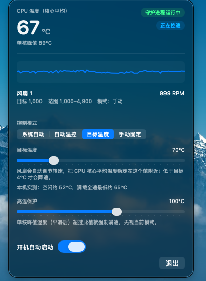

macOS 默认 · 1000 RPM
> 87°C
核心平均持续上升，单核峰值可超 103°C。90 秒仍未收敛。
开源 · macOS 13+ · Apple Silicon & Intel
菜单栏小工具：看温度、控转速。按曲线自动调速，或把核心平均温度闭环稳定在你指定的目标值。零网络、可审计、MIT。

macOS 默认风扇策略偏保守。满载时风扇常死守最低转速，温度一路爬升到芯片降频。这个工具把控速能力交还给你。
macOS 默认 · 1000 RPM
> 87°C
核心平均持续上升，单核峰值可超 103°C。90 秒仍未收敛。
强制满速 · 4900 RPM
≈ 65°C
约 30 秒收敛稳定。同机同负载，温差约 22°C。
数据来自 M4 Mac mini（Mac16,10）10 线程满载实测。空闲约 52°C，曲线起点在此之上，闲时不会无谓提速。
从菜单栏点开面板即可切换。另有高温保护：单核峰值超阈值就强制满速。
交还给 macOS。默认最安全，只监控不控速。
按温度曲线升降速，可选静音 / 均衡 / 强力降温。
设一个目标（如 70°C），风扇自动找到刚好压住它的转速。低于目标 4°C 才降速，避免抽速。
用滑块锁一个固定转速百分比，适合先确认风扇是否响应。
控速必须有 root。市面上同类软件你很难逐行确认它还做了什么——这里全部可审计。
不发任何请求。全工程只有本机 Unix socket，用于 GUI 与守护进程通信。
只用 Apple 自带框架，无第三方依赖。MIT 开源。
root 进程只读写 SMC 风扇键，不监听网络端口。
Apple 芯片与 Intel 都能装。需要 macOS 13 或更高。
先装 App 就能监控；要控速再装守护进程（需要一次管理员密码）。
从 Releases 下载 LeoFanControl-*.dmg，把 App 拖到应用程序文件夹。
未做 Apple 公证，会被 Gatekeeper 拦。按住 Control 点击 App → 打开 → 再点打开。或：xattr -dr com.apple.quarantine /Applications/LeoFanControl.app
没有窗口、不进程序坞。顶部菜单栏会出现风扇图标和当前温度。
打开终端，进入 DMG 里的「守护进程（控速必需）」文件夹，执行 sudo ./install.sh。面板右上角会显示「守护进程运行中」。
首次打开必看
这个 App 没有购买每年 99 美元的开发者证书，也未做公证。系统拦一下不代表文件损坏。
菜单栏常驻温度；点开就是完整控制面板。

看看我的其他作品。
当前页面
macOS 菜单栏温控：按 CPU 温度自动调速或闭环稳温。
其他作品
轻量 macOS Markdown 阅读 / 编辑：双击打开，左侧目录，右侧正文。
其他作品
TourBox 键位预设分享：模型、推理强度、活跃任务、审批与全局语音一手搞定。